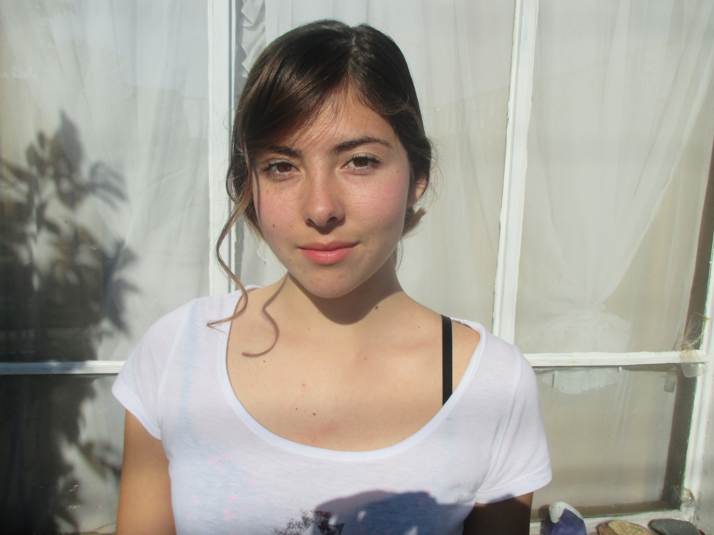

|  | CURRICULUM VITAE | |
| Datos Personales | ||
|---|---|---|
| Nombre | Silvana Sarrocchi Vargas | |
| Nacionalidad | Chilena | |
| Fecha de Nacimiento | 05 de Septiembre 1997 | |
| Datos Educacionales | ||
| E. Básica | Escuela Humberto Vilches A | |
| E. Media | Colegio Juanita Fernández | |
| E. Superior | Universidad Católica de Valparaíso | |
| Ramos Optativos | ||
| 1° Año Diseño General | Construcción | |
| 2° Año Diseño Gráfico | Taller de luz y color | |
| 3° Año Diseño Gráfico | Diseño de Interacción | |
| Proyectos Universidad | ||
| 1° Año Diseño General | Contrucción cubos de yeso | |
| 2° Año Diseño Gráfico | Edición Caso Stijl | |
| 3° Año Diseño Gráfico | Creación de un Juego de mesa | |